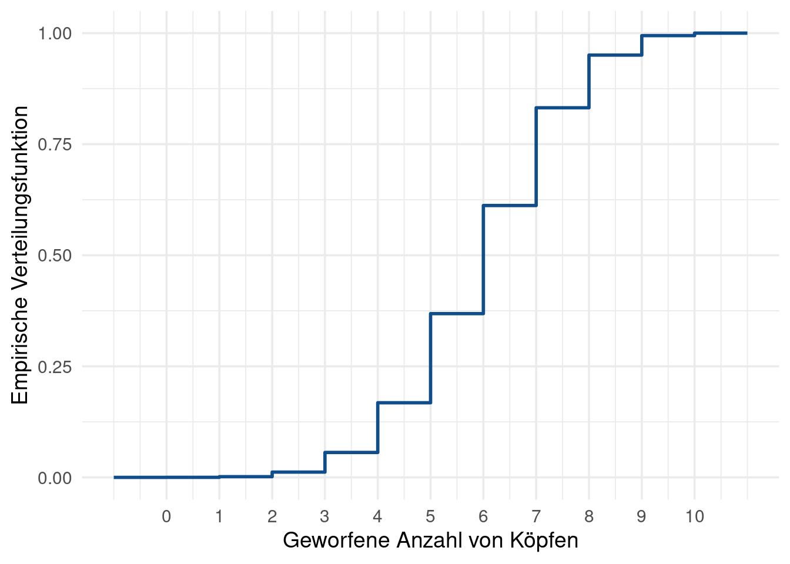

Schreibe eine Funktion throw_coin(times, prob), die eine unfaire Münze times mal wirft und zurückgibt, wie oft die Münze Kopf gezeigt hat. Dabei wird Kopf mit einer Wahrscheinlichkeit von prob gezeigt
Nutze anschließend diese Funktion, um das folgende Zufallsexperiment 10000 mal unabhängig voneinander auszuführen:
Eine Münze wird 10 mal geworfen
Die Wahrscheinlichkeit, dass Kopf fällt, ist 60%
Die Anzahl der geworfenen Köpfe wird festgehalten.
Visualisiere nun Verteilung der Funktion mithilfe eines Balkendiagramms. Dies sollte ungefähr so aussehen.
die x-Achse mithilfe von scale_c_continuous() formatierst, sodass sie ganze Zahlen zeigt
das theme veränderst bspw. mit theme_light() oder theme_minimal(). Erhöhe dabei die base_size in deiner theme_* Funktion, sodass die Schrift deutlich größer wird.
Lass uns nun eine andere Darstellung wählen, um die Ergebnisse des Zufallsexperiments zu visualisieren.
Berechne anhand deines Vektors die empirische Verteilungsfunktion
\[
\hat{F}(x) = \frac{1}{n} \sum_{k = 1}^{n} \mathbb{1}\{ X(k) \leq x \},
\] wobei \(X(k)\), die \(k\)-te Beobachtung, \(k = 1, \ldots, n\), einer Zufallsvariable \(X\) ist für \(x \in \{-1, -0.99, -0.98, \ldots, 11\}\).
Visualisiere \(\hat{F}\) mithilfe der Funktion geom_step().
x <-seq(-1, 11, 0.01)F_hat <-numeric(length(x))for (k inseq_along(x)) { F_hat[k] <-mean(heads <= x[k])}plot_vertfkt <-ggplot() +geom_step(aes(x = x,y = F_hat ), col ='dodgerblue4',size =1 ) +theme_minimal(base_size =14) +scale_x_continuous(breaks =0:10) +labs(x ='Geworfene Anzahl von Köpfen', y ='Empirische Verteilungsfunktion')plot_vertfkt

Gegenüberstellung
Wenn du deine zwei vorherigen plots in Variablen abgespeichert hast, kannst du sie ganz leicht in einer gemeinsamen Grafik anzeigen. Installiere und lade dazu das patchwork Paket. Nachdem das Paket geladen ist, kannst du Plots ganz einfach “addieren” (mit +) und “dividieren” mit /.
Nutze dies um die folgenden Grafiken zu erstellen: